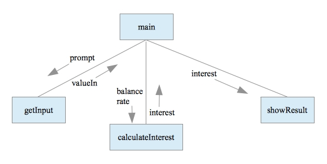
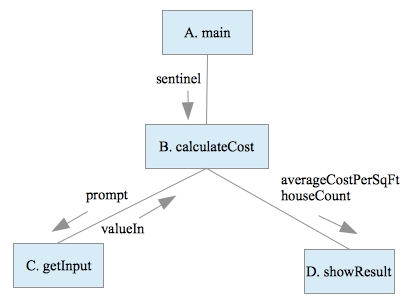

CS 139 Algorithm Development
Lab10B: Program Design and Structure
| Structure Diagram |
Program |
|  |
import java.util.*;
public class Interest {
public static void main(String[] args) {
double balance;
double rate;
double monthlyInterest;
balance = getInput("Enter the loan balance: ");
rate = getInput("Enter the annual interest rate % (0-100): ");
monthlyInterest = calculateInterest(balance, rate);
showResult(monthlyInterest);
}
public static double getInput(String prompt) {
double valueIn;
Scanner keyboard = new Scanner(System.in);
System.out.println(prompt);
valueIn = keyboard.nextDouble();
return valueIn;
}
public static double calculateInterest(double balance, double rate) {
double interest;
interest = (rate / 100.0 / 12.0) * balance;
return interest;
}
public static void showResult(double interest) {
System.out.println("Monthly interest: " + interest);
}
}
|
Part 1: Refactoring
Refactoring is the process of restructuring code to improve its style and organization without changing its runtime behavior. Examine the following program. It is a monolithic program, i.e., one with no structure. The structure diagram alongside the program shows an improved design, with several modules.
1. For each line of code in the program, decide which module that line of code should belong to in the improved design. In your answer worksheet, list the lines that belong to each module (A, B, C, D). You may describe ranges of lines like this: 1-5, 21, 27-30.
| Original Code |
Improved Design |
1. import java.util.Scanner;
2.
3. public class CostPerSqFt {
4.
5. public static void main(String[] args) {
6. final double SENTINEL = 0.0;
7. double houseSize;
8. double costPerSqFt;
9. double totalCostPerSqFt;
10. double averageCostPerSqFt;
11. int houseCost;
12. int houseCount;
13. Scanner keyboard;
14.
15. keyboard = new Scanner(System.in);
16. totalCostPerSqFt = 0.0;
17. houseCount = 0;
18.
19. System.out.println("Enter the square feet and price for each house.");
20. System.out.println("Enter " + SENTINEL + " for house size to quit.");
21.
22. do {
23. System.out.print("Size in square feet: ");
24. houseSize = keyboard.nextDouble();
25. System.out.print("Cost in whole dollars: ");
26. houseCost = keyboard.nextInt();
27.
28. if (houseSize > 0.0) {
29. costPerSqFt = houseCost / houseSize;
30. totalCostPerSqFt = totalCostPerSqFt = costPerSqFt;
31. houseCount = houseCount + 1;
32. }
33. } while (houseSize != SENTINEL);
34.
35. if (houseCount > 0) {
36. averageCostPerSqFt = totalCostPerSqFt / houseCount;
37. }
38. else {
39. averageCostPerSqFt = 0.0;
40. }
41. System.out.println("Number of Houses: " + houseCount);
42. System.out.println("Average cost per square foot: " + averageCostPerSqFt);
43. }
44.
45. }
|
 |
Part 2: Creating a Program Skeleton
2. Given the structure diagram below, write all of the method headers (using the argument and parameter names shown in the diagram). Assume that names ending in _s are string values, otherwise they are int's.
Part 3: Create Your Own Design
4. Develop a structure diagram (on paper) for a program to solve the following problem. Then write the program skeleton (method headers) as in Part 2, and the complete main method.The Password Generator program will generate a unique password using random characters. The user will input a password length and a string of characters from which the password can be composed. The program will select the required number of characters at random to form a password, and then display the password.